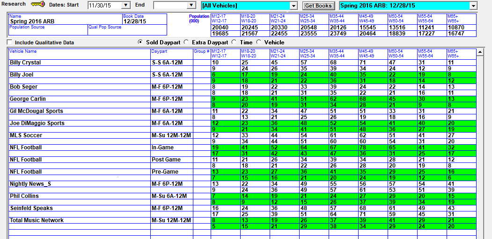
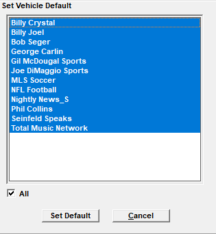

Research List Screen
The Research screen is used to view and edit audience data that has either been imported using a research import such as Act 1, or manually entered.

Research books can be selected from the book dropdown in the upper right corner of the screen. On version 7.0 and earlier version, the available research books can simply be picked from the dropdown menu. On version 7.1 and above, there are date and vehicle filter criteria that can be entered, then the Get Books button can be pressed to populate the research book dropdown only with books that meet the filter criteria. On version 8.1 and above, you can type text in the research book name field and the list of books will be filtered to include books where somewhere in the name that text string you typed in appears.
The following fields appear on this screen:
- Name, Book Date: The name and date of the research book.
- Population Source, Qual Pop Source: You can choose the book on which to base your Population and Qualitative Population.
- Population: The population is simply the number of people within the area being surveyed, by demo category.
- Qualitative Population: Qualitative research counts different types of people that are listening, such as people in certain age groups, races, or certain income groups, and so on without limit.
- Include Qualitative Data: Will include Qualitative, or socio-economic data. Only those networks that subscribe to Radar can import qualitative data.
- Demo categories: These fields represent the population of the U.S.
- Sold Daypart: When dayparts are imported, they are compared to the dayparts in the latest Rate Card. If they match exactly, they are stored as Sold Dayparts.
- Extra Daypart: If the imported dayparts do not match, they are stored as Extra Dayparts.
- There is no limit to the number of dayparts allowed in a vehicle.
- Time: When quarter hour data is imported, it is stored as Time data.
- Vehicle: When Exact Time data is imported, it is stored as Vehicle data, since it pertains to the vehicle as a whole, and refer to no particular daypart.
- For each quarter hour and each daypart, there are 18 different audience demographic values published, encompassing 9 age groups for both men and women. Adults 25-54, for example, can be calculated by adding up men 25-34, women 25-34, men 35-44, women 35-44, men 45-54, and women 45-54
- Audience Data in Thousands, Hundreds, Tens, Units: This Site Options -> Audience setting determines the units in which you will view Audience data; i.e. Thousands would show 45,000 as 45, Hundreds would show 450, Tens would show 45,000 as 4500, and Units would show 45,000
- Pre-defined daypart information (in the lower left corner of the screen) takes precedence over the audience/population information that is defined. Not all research companies provide Pre-Defined daypart information
If using Qualitative Research, you can enter your different socio-economic demographics by clicking the Qualitative button and defining each demo.
The name field can contain up to four alphanumeric characters, which will be combined with the Description field.
Duplicate
Available on version 7.1 and above, at the bottom of the screen, there are Base Duplicate and Row Duplicate buttons. The Base Duplicate feature makes it possible to create new Sold Daypart records for non-base dayparts by copying the audience values from a base daypart for the same vehicle. The Duplicate Row feature is used to duplicate the audience numbers for a row to a new row, to avoid having to enter the same audience numbers repeatedly when there are rows that have the same audience. For a complete explanation of these features, refer to the Research help document, which is available on the Counterpoint website.
Set Default
On version 7.1 and above, the “Set Default” button makes it possible to set the default research book for one or more vehicles directly from the Research screen. To set the default book in this way, press the Get Books button to bring up a research book, then press the Set Default button in the lower part of the screen. A popup screen will appear, and the vehicles that are included on the research book will be listed and selected.

The selected vehicles can be de-selected by ctrl-clicking them if needed. Press the Set Default button directly beneath the vehicle list to set the default research book for the selected vehicles to the selected research book.
Additional Research Screen Info
To use Research, the settings “Proposal System” and “Research” must be checked on in Site Options -> Options.
Single Custom Demo Only: This changes the look of the Research Screen, and allows only one demo to be entered with a mandatory sort code of 1. This is activated in the Site Options -> Audience tab.
On version 8.1 and above, there are fields on the Sold Daypart, Extra Daypart, and Vehicle views for the Act 1 lineup codes and settings.
For additional information on Research, click here.